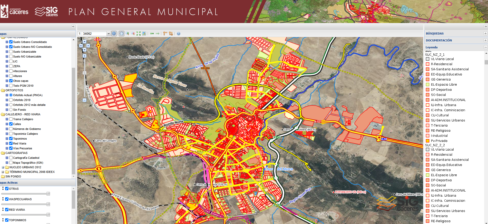
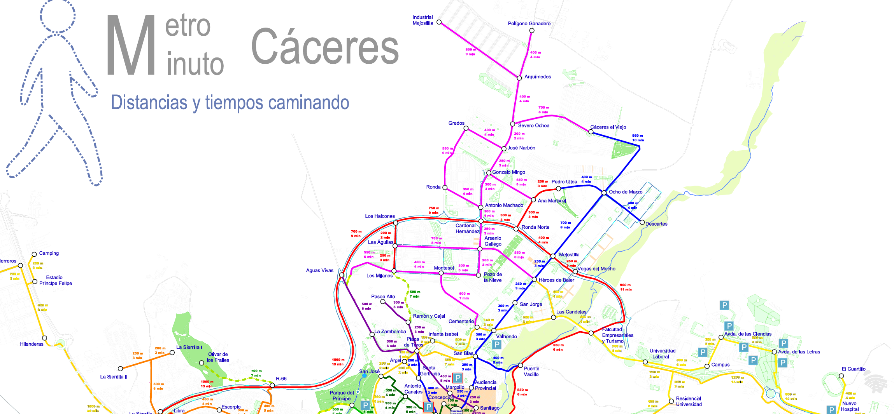
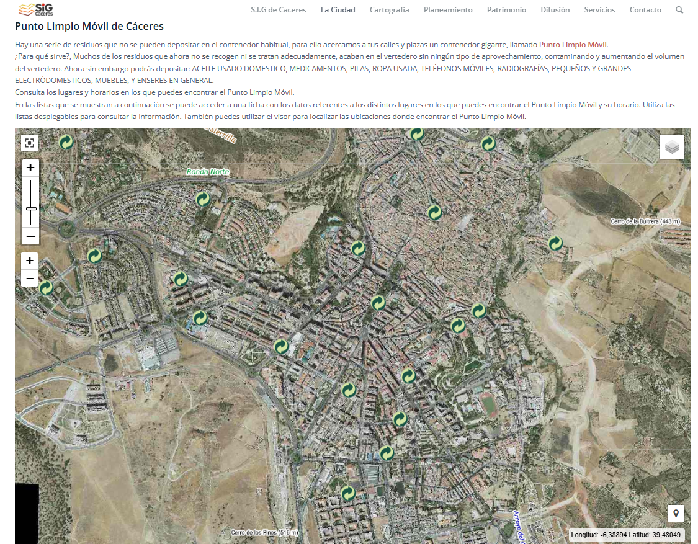
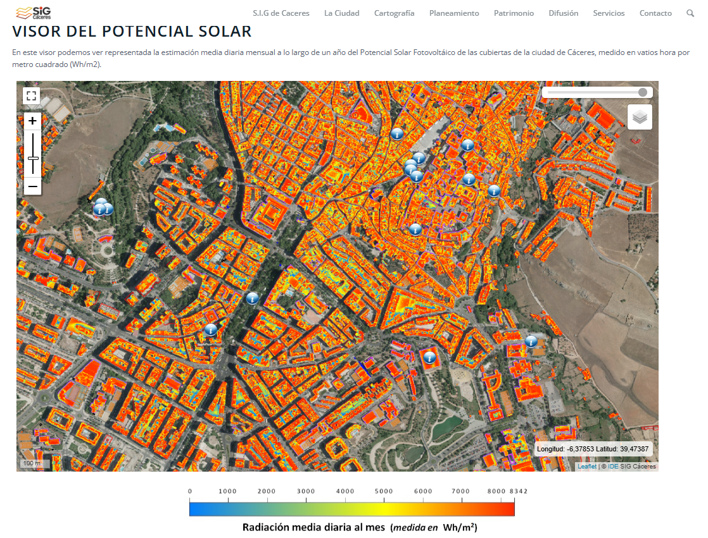

La planificación urbana utiliza una gran variedad de mapas, cada uno diseñado para responder a preguntas específicas sobre cómo funcionan las ciudades y cómo podrían mejorar. Estos mapas son herramientas clave para urbanistas, arquitectos y autoridades locales, y permiten organizar el espacio, gestionar recursos y proyectar el crecimiento futuro. A continuación, se presentan los tipos más relevantes de mapas utilizados en planificación urbana, con ejemplos concretos y casos de uso.
Mapas de Zonificación
Estos mapas muestran cómo se organiza el uso del suelo en una ciudad, dividiendo las áreas en zonas con diferentes propósitos: residencial, comercial, industrial, recreativo, entre otros.
Ayudan a regular el desarrollo urbano y aseguran que actividades incompatibles estén separadas.

Mapas de Densidad Poblacional
Representan cuántas personas viven en cada área de una ciudad, generalmente expresado en habitantes por kilómetro cuadrado.
Identifican áreas superpobladas o con baja densidad, ayudando a planificar servicios públicos, transporte y vivienda.

Mapas de Infraestructura
Representan la ubicación de redes básicas de servicios como agua potable, electricidad, alcantarillado, gas y telecomunicaciones.
Permiten identificar áreas con deficiencias en servicios básicos y planificar nuevas instalaciones.

Mapas de Movilidad y Transporte
Detallan las rutas de transporte público, carreteras, ciclovías y vías peatonales, así como los flujos de tránsito y movilidad.
Ayudan a optimizar rutas, reducir congestionamientos y mejorar la conectividad entre barrios.

Mapas de Áreas Verdes y Recreativas
Muestran la ubicación y extensión de parques, jardines, áreas recreativas y espacios naturales dentro de la ciudad.
Garantizan que todos los habitantes tengan acceso a espacios verdes, promoviendo bienestar y sostenibilidad.

Mapas de Riesgos Naturales
Identifican áreas vulnerables a fenómenos naturales como inundaciones, deslizamientos, terremotos, erupciones volcánicas o incendios forestales.
Ayudan a planificar el desarrollo de la ciudad evitando construir en zonas peligrosas o implementando medidas de mitigación.
Mapas de Equipamientos Urbanos
Representan la localización de servicios esenciales como hospitales, escuelas, mercados, centros deportivos y estaciones de policía.
Aseguran que la población tenga acceso equitativo a estos servicios y permiten identificar zonas donde hacen falta.

Mapas de Contaminación y Medio Ambiente
Muestran áreas con altos niveles de contaminación del aire, agua o suelo. También identifican fuentes de contaminación como fábricas o carreteras muy transitadas.
Ayudan a mitigar problemas ambientales y a tomar decisiones para mejorar la calidad de vida.
